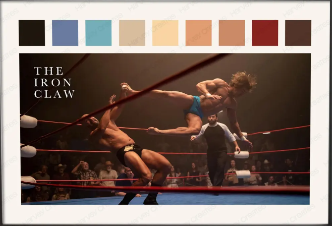

Overview
This lab combines a custom Mapbox basemap, a hometown locations dataset, and a Python-generated interactive map centered around my hometown, Flower Mound, TX.
Interactive Map
Open Interactive Map in New Tab
Written Reflection (250–500 Words)
1. Design Inspiration

My basemap design was inspired by the color palette in the reference image above from the movie The Iron Claw which is a personal favorite of mine. I wanted the map to feel clean and modern, but still have some personality and warmth. I used the palette as a guide for land/water contrast and tried to keep roads and labels readable without making the map feel too loud.
2. Cartographic Challenges
The biggest cartographic challenge was making sure each component worked in harmony and did not clash with the others. I had to balance water, land, roads, terrain, and labels so no single element overpowered the map. When labels were too heavy, they fought with the markers; when roads were too bright, they distracted from the points I actually wanted viewers to focus on. I spent most of my revisions adjusting hierarchy and contrast so the basemap supported the hometown data instead of competing with it.
3. Technical Challenges
AI helped with most of the coding, especially building the script structure and speeding up setup. I still had to do the quality checks myself by running the map, verifying geocoding results, checking popup formatting, and making sure the final output actually looked right. So AI handled a lot of the heavy lifting, but I was still responsible for final accuracy and presentation quality.